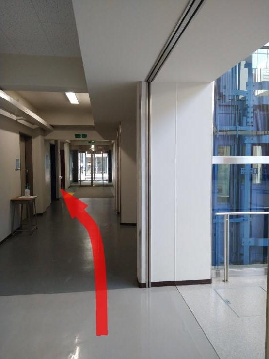

Day 1: Building 2, 1st Floor, Room C121
You first go to the guard box, tell the guard that you are attending TPP2021,
then enter from the nearby entrance, ([3: 正面玄関] in the map).
Go to [6: コミュニケーションアトリウム] and head towards [7: 2号館].
You have to go upstairs to the corridor that connects [6] and [7].

Day 2: Building 14, 1st Floor, Room E131
You need not to visit the guard box.
Directly come to the entrance of Building 13 (designated [16: 13号館] in the map),
which is also the shared entrance of Building 14.